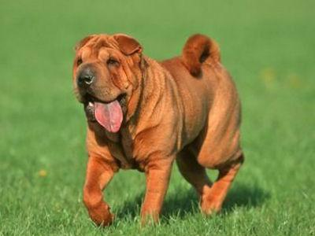

有一种毛娃娃，对人类忠诚、是人类的好朋友！！
毛娃娃丫！
狗（拉丁文Canis lupus familiaris）属于脊索动物门、脊椎动物亚门、哺乳纲、真兽亚纲、食肉目、裂脚亚目、犬科动物。中文亦称“犬”，狗分布于世界各地。狗与马、牛、羊、猪、鸡并称“六畜”。 有科学家认为狗是由早期人类从灰狼驯化而来，驯养时间在4万年前~1.5万年前，发展至今日。被称为“人类最忠实的朋友”，现如今是饲养率最高的宠物。其寿命约十多年。 在中国文化中，狗属于十二生肖之一，在十二生肖中的第11位。